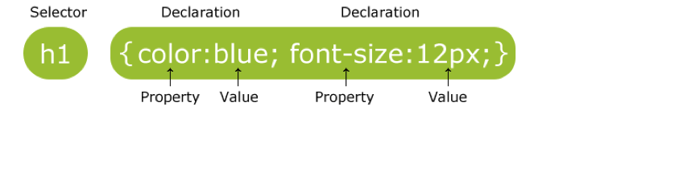
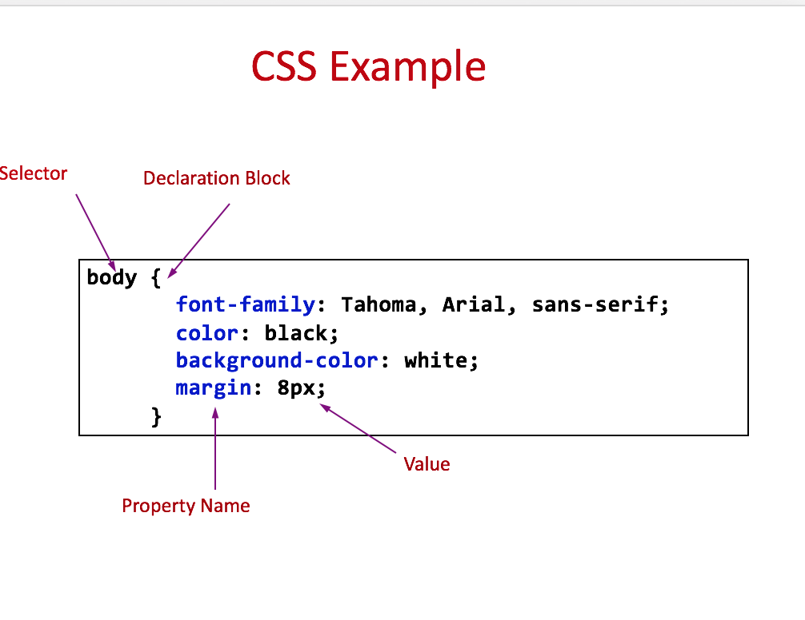

Week 3
Extending HTML and Introducing CSS
Block level elements
Block elements form a separate block of HTML
- they can be contained within other block elements
the following tags are all block level elements
<p>…</p> <h1>…</h1> <table>…</table>A block level element takes up the entire space of its container
except for the p element, they can contain other block elements
Inline elements
Inline elements stay in line with the rest of the content
- They can only contain other inline elements, but may be contained by both inline and block elements
- The following tags are inline elements:
<img>…</img> <a>…</a>
HTML <div> Tag
- Defines a division or a section in an HTML document
- Used to group elements to format them with styles
<body>
<div id=“wrapper">
<div id="header”>
……
</div> <!- - [end]#header - ->
<div id="section”>
……
</div> <!- - [end]#section - ->
<div id="footer”>
…….
</div><!- - [end]#footer - ->
</div> <!- - [end]#content - ->
</body>
HTML <span> Tag
- Provides a way to add a hook to a piece of text or a part of a document, e.g.
<p>She has <span class="blue">light blue</span> eyes.</p>
The difference between span and div is that a span element is inline and often used for a small section of HTML, whereas a div element is used to group larger chunks of code
class and id Attributes
class specifies the element as a member of one or more classes allow developers to define specific kinds of a given element
<element class="classname">id specifies a unique id for an HTML element, can only be used once
<element id="id">
Introducing CSS
Cascading style sheets allow us to separate the content of our website from the appearance:
- Multiple developers can work on different aspects of the web site development
- Makes your web site quicker to update
- Smaller file sizes and good for search engine optimisation
- Helps browsing from different devices
What is CSS
- CSS stands for Cascading Style Sheets
- Styles define how to display HTML elements
- Two main parts: a selector and one or more declarations
 
Selectors
We can target selectors in different ways:
Element selectors
- name of an HTML element, e.g.
p - Grouping selectors together
the same style applies to all elements, e.g.h1,h2,h3,h4,h5,h6
- name of an HTML element, e.g.
- class selectors
- “.” followed by the value of the class, e.g.
- .unit or p.unit
- id selectors
- “#” followed by the id name, e.g. #itech
How is CSS Used?
Although we can use inline, internal styles, always try and use an external CSS file. Linked in like this:
<head>
<link rel="stylesheet" type="text/css" href="mystyle.css"/>
</head>